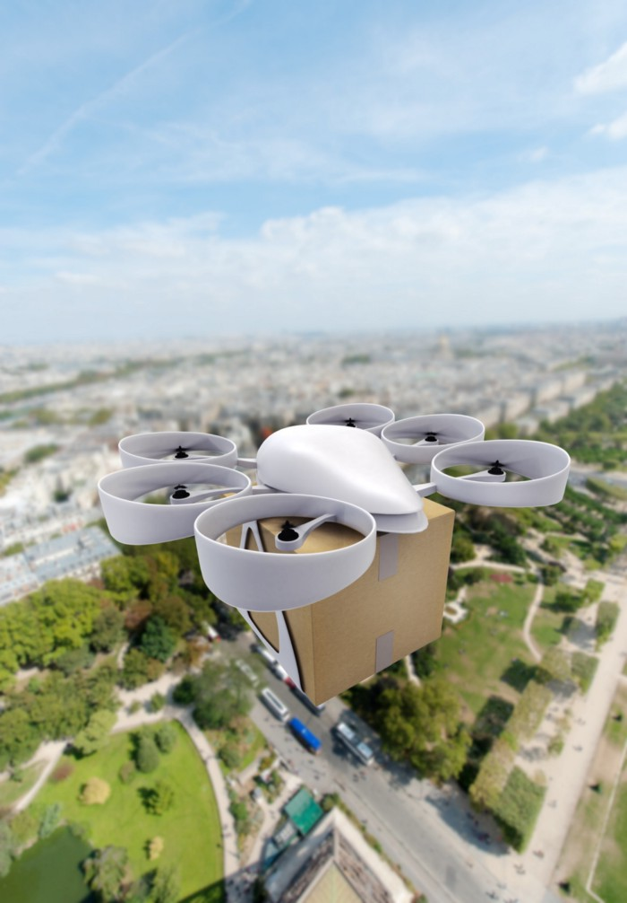

How will the autonomous industry change the game?
The idea of autonomous vehicles and other forms of transport and devices has existed since the birth of computers.
The need for autonomous systems will grow. The arrival of this highly developed combination of hardware and software is closer than before, and it will begin in one sector after another.
This industry will be remembered for its concept of doing things remotely and safely, with a wide range of capabilities.
What will become autonomous?
Google is already a major player in driverless cars, followed by companies such as Uber and Tesla, which are either at an advanced stage or well on their way to developing them.
With cars, it is easy to see that they will become autonomous and that a majority of us will use them when the technology is good and safe enough.
What else? Military drones are autonomous in some ways. But what about commercial use? Amazon wants to deliver products to you by drone and is already working towards it. When Amazon receives government permission to deliver products by drone, others will follow and competition will be considerable. If drones are allowed to deliver things by air, the list of possible deliveries is enormous.

Suddenly you could order groceries or takeaway from your favourite restaurant. Or what about alcoholic drinks delivered by drone to your house in five minutes?
The question is who will start this game first and get a good slice of the pie to begin with.
I mentioned cars and drones. What about boats? The maritime industry will eventually become autonomous when the technology is good enough and worth the cost. The oceans could be monitored by systems controlling sea transport. There are already systems capable of handling navigation and identifying what is where. But they will improve, as will unmanned systems. New systems will be installed alongside older systems on ships to make them autonomous. Older boats could simply be upgraded.
Let us talk about something smaller: a vehicle almost the size of a scooter but with one wheel. It has a built-in gyroscope, so it balances itself, one or two seats and a small, very smart electric motor. It drives itself; you only need to enter the coordinates and off you go. It can also return home to recharge. When you want to go home, press the “pick me up” button and it knows exactly where you are.
I want to return to drones: rubbish-collecting drones. They could collect waste autonomously, monitored by the municipality’s organised system for autonomous devices.
The possibilities of autonomous systems are remarkable. The question concerns innovation and development through cooperation between individuals, companies, organisations and, not least, public authorities.